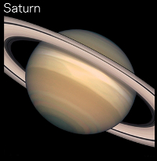

Saturn
Click on Saturn in the model to learn more!

Jewel of the Solar System
Saturn is very similar to Jupiter, but it is much smaller. Saturn is the second largest planet in our Solar System and is the second Gas Giant. Under the clouds of methane, hydrogen and helium, the sky gradually turns into liquid until it becomes a giant ocean of liquid chemicals, much like Jupiter. Saturn is the least dense planet in our Solar System. It is made up of mostly hydrogen and helium, which are the two lightest elements in the universe and thus make Saturn the lightest planet that we know of. Saturn is so light, that it does not have much gravity. Interestingly, it is believed Saturn would actually be able to float in water because the hydrogen and helium that make up the planet are so lightweight.
Saturn is most well-known for its rings. However, it is not the only planet with rings. Jupiter, Uranus and Neptune also have rings. Its beautiful rings are 169,800 miles wide. Yet the rings are amazingly thin, estimated to be less than a kilometer thick. That's only a little more than half of a mile. The rings are not solid but rather are made up of particles of ice, dust and rocks. The rings are held in place around Saturn by the moons that also orbit this large planet. The gravity of these moons also causes the gaps that are seen in between the rings.
Atmosphere and Temperature
Due to the enormous pressures on saturn, hydrogen exists as layers of liquied and metallic liqued below the thick upper atmosphere of Saturn. In addition to the extreme pressurs, the upper atmosphere of Saturn is extremely turbelant with winds reaching over 1,000 miles per hour regularly.
Saturn's atmosphere is composed of 96.3% Hydrogen and 3.25% Helium. Temperatures on Saturn can range from -285 degrees Fahrenheit near the upper atmosphere to over 21,000 degrees Fahrenheit towards the core of the planet.
Gravity
Even though Saturn is massive, it does not have the accompanying gravity. With a gravitational constant of 10.44 m/s^2 you would weigh roughly 25% more on Saturn versus here on Earth.
Moons
Saturn has 53 official moons and 9 unofficial or unconfirmed moons. The most well-known of Saturn's moons is probably Titan. It is the second largest moon in the Solar System next to Jupiter's Ganymede. Titan is larger than the planet Mercury.